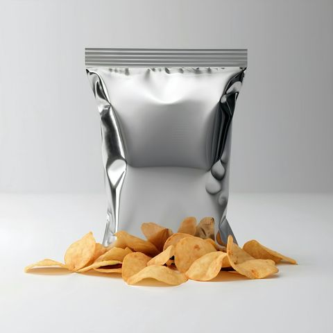
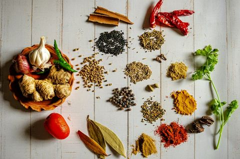
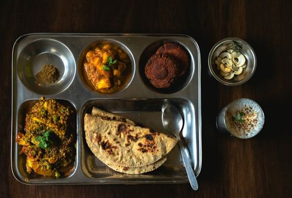
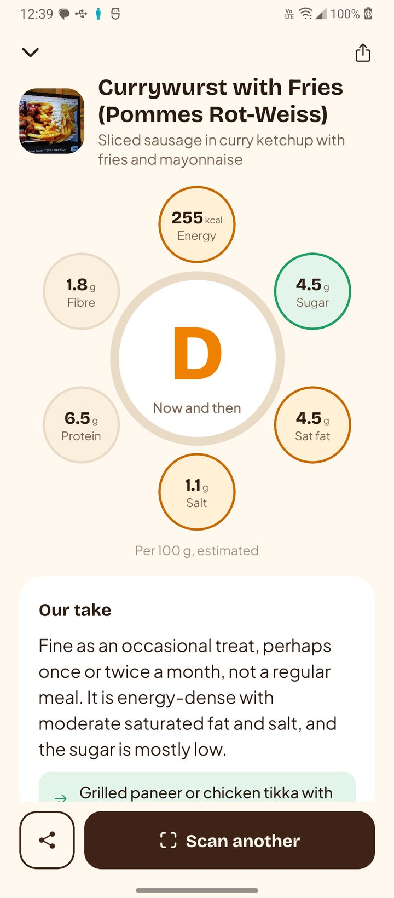
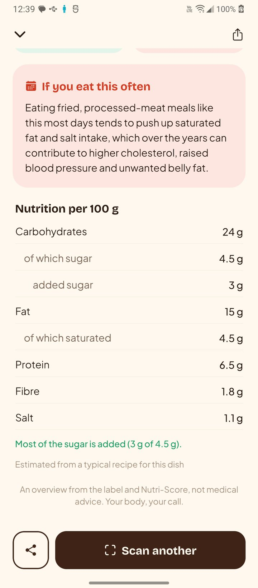
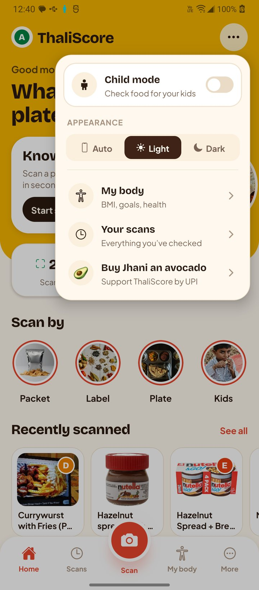
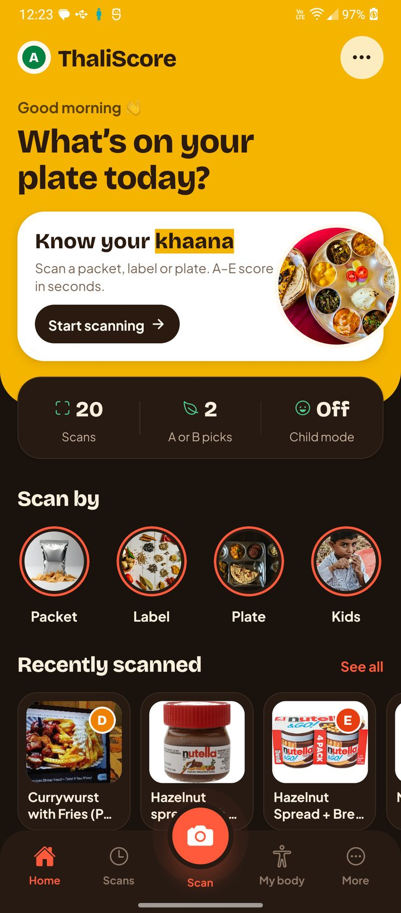

One letter. No confusion.
Grades follow the Nutri-Score method and are worked out in the app from the numbers, never guessed by AI. Sugar, salt, saturated fat and calories pull a food down; fibre, protein, fruit, veg and pulses pull it up.
Scan by
Three ways in, one tap each.

Packet
Point at the barcode. Not in the database yet? Snap the label once and ThaliScore remembers it.

Label
Photograph the nutrition table. AI reads the per-100 g column, total and added sugar.

Plate
Rajma chawal, dosa, vada pav. Got it wrong? Tell it what it is and it checks again.
More than a grade
Every result answers the questions you actually have.
Child mode
A clear OK / Sometimes / Avoid for under-2s and 2–12s, with sugar per serving against a child’s daily limit.
What’s inside
Flags palm oil, maida, added sugar and more. Tap any ingredient or INS number, like “503(ii)”, to see what it is in plain words.
Allergy alerts
Tick peanut, milk, gluten and more in My body. A scan that contains one turns red, and “may contain” shows in amber.
Head to head
Stuck between two biscuits in the aisle? Scan both and see the better pick, nutrient by nutrient.
Listen
One tap reads the grade and advice aloud. Handy for parents and grandparents. Star favourites and search your scans too.
Good for, limit if
Who it suits and who should go easy, tied to the real numbers: “High BP: 2.9 g salt per 100 g”.
If you eat this often
What a C, D or E food tends to do over months and years. Calm, factual, no scare tactics.
My body
Optional BMI (Asian cut-offs), age, goals and conditions like diabetes. Every scan gets a “Heads-up for you” card. Saved only on your phone.
Share a report
Send a full-report image to WhatsApp or a printable A4 PDF. Light and dark mode too.
A look inside




Why it matters
Sugar, salt and palm oil hide in everyday snacks.
Source: ICMR-INDIAB national study, The Lancet Diabetes & Endocrinology, 2023 (adults 20+).
What we follow
Every rule in the app comes from a published source.
The 2023 A–E algorithm used across Europe.
Dietary Guidelines for Indians, 2024: salt, sugar and fat.
Sugar limits, and feeding rules for babies and young children.
Indian labels and the 2026 high sugar / salt limits for kids’ food.
How to install
- On your Android phone, tap Download for Android above.
- Open ThaliScore.apk from your downloads. If Android asks, allow your browser to install unknown apps.
- Tap Install, open ThaliScore and allow the camera.
Had NutriScan? ThaliScore installs over it and keeps your scans.
Privacy
No account, no ads, no tracking. Your scans and My body details are saved only on your phone; if My body is on, just a summary (age, BMI, conditions, goal) goes with each request so the advice fits you. Photos are sent only to read them, and aren’t stored. Privacy policy · reply2jhani@gmail.com
A helping hand, not medical advice. Food photo scores are estimates from a typical recipe. Your body, your call.
Buy me an avocado
ThaliScore is free. If it helped you eat a little better, treat its maker to something healthy. Any amount, by UPI.